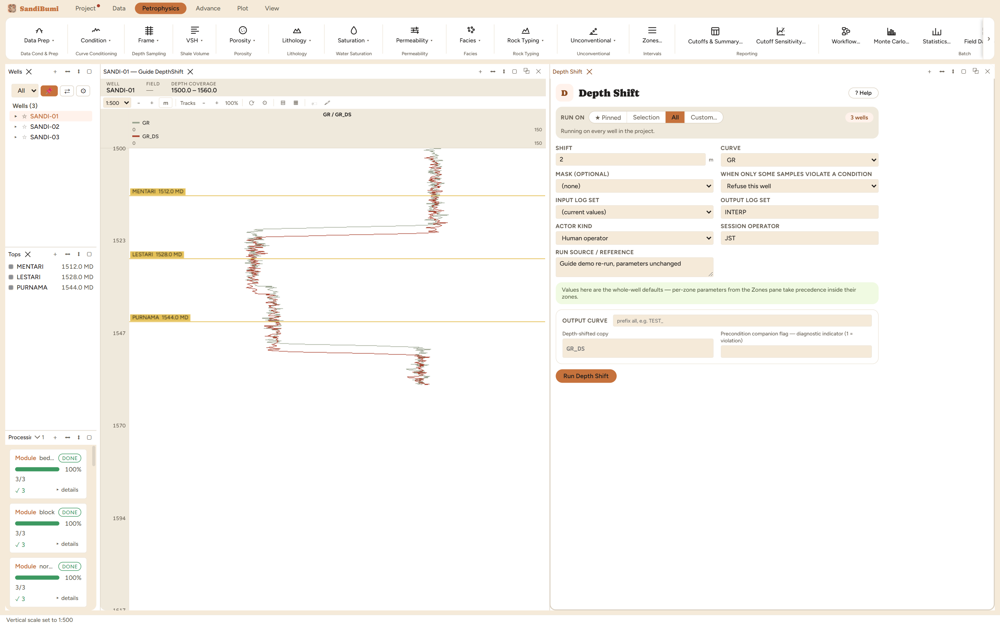

Shifts a curve by a block amount in depth and resamples it back onto the well's own grid by linear interpolation. Positive shift moves the feature deeper; the input curve is never modified.
OUT(z) = CURVE(z − SHIFT), resampled onto the well's depth grid (+SHIFT = deeper)
Depth Shift moves a curve by a stated amount (positive is deeper) and
resamples it back onto the well's own depth grid by linear interpolation. The
input curve is never modified; the result is a new _DS curve
beside it. SHIFT is zone-overridable, so different intervals can take different
block shifts in one run.
SHIFT +2 m on GR, a demonstration the size of a typical core-to-log tie. (For actual core work, use the Core ▸ Register Depth tools, which correlate rather than assert; this module is the general-purpose block move for curves.)

On these wells: 3 clean. GR_DS carries 1143 finite samples against the original 1185. The shift walked ~14 samples (2 m at the 0.1524 m step) off the end of each well, and those depths are MISSING rather than extrapolated: a shifted curve states nothing about rock the original never logged.
Everything below is generated from the same manifest the application builds this module’s pane from — descriptions, defaults, sources, ranges and pre-run checks here are exactly what the running application enforces.
Shifts CURVE by SHIFT metres (+ = the feature moves DEEPER) and resamples it back onto the well's depth grid by linear interpolation. SHIFT is zone-overridable, so different intervals can take different block shifts. The result is written as <CURVE>_DS; the input curve is never modified.
| Role | Description | Resolves to | Required | Notes |
|---|---|---|---|---|
| CURVE | Curve to shift | GR | yes | — |
Whole-well defaults; per-zone values from the Zones pane take precedence inside their zones (except where a parameter is marked one-value-per-well).
Depth shift (+ = deeper)
| Name | Description |
|---|---|
| CURVE_DS | Depth-shifted copy |